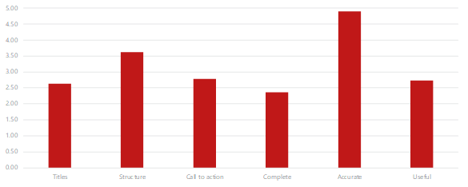
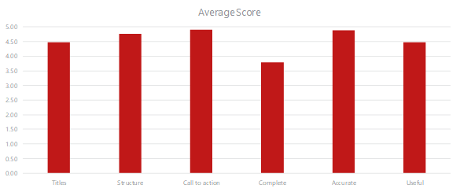

The Challenge
As part of the cross-departmental effort to improve the customer installation experience, we had to make sure the installation content we published to docs.mcafee.com was good content, and that any content changes improved the overall quality of our content.
The Response
Taking a page from Kristina Halvorson and Melissa Rach’s “Content Strategy for the Web,” we determined the quality areas we wanted to measure for our content.
After much discussion with stakeholders, we defined these quality criteria:
- Titles and short descriptions: Is the article optimized for SEO? Can customers quickly determine if the artile is what they’re looking for?
- Completeness: How complete is the article? Does it contain all the information that a customer would expect? Are we leveraging DITA elements (prerequisites, context, examples, task results) to ensure completeness? Are we including screenshots and graphics?
- Call to action: How clear is the article’s call to action? As a customer, do I know what to do after reading the article?
- Accuracy: Is the information in the article accurate? For procedures, do the steps leaad to the desired result? Are terms and product names used correctly?
- Structure: How well-organized is the article? Is it scanable? Is it logically and predictably organized? Can I quickly find the information I need?
- Usefulness: How helpful is the topic really? Does it meet our customers’ needs?
We then tasked our content strategy team with applying these quality criteria to a subset of our installation content. For every article, each criterion was rated from 0-5.

What we discovered was that while our articles were accurate, there was room for improvement. Based on the audit, we made these recommendations to our content authors:
- Use keywords in titles and short descriptions
- Leverage DITA elements to make articles more complete
- Include clear next steps where appropriate
- Align articles to customer needs (see the Top Tasks project)
The Benefits
After the authors made the recommended changes, we re-evaluated our content sample according to the same quality metrics.

Comparing the before and after quality audits, these changes resulted in an overall quality increase of 44%.
Admittedly, that’s us grading our own work. The change in quality tells us we’re meeting the goals we set for ourselves, but the audit doesn’t tell us if we’re improving the customer experience. However, as the release that contains those changes gains traction, we’ll be able to correlate our internal quality findings with customer Net Promoter Scores, frequency of support calls, frequency of documentation bugs, and overall improvement in third-party evaluations of product documentation.